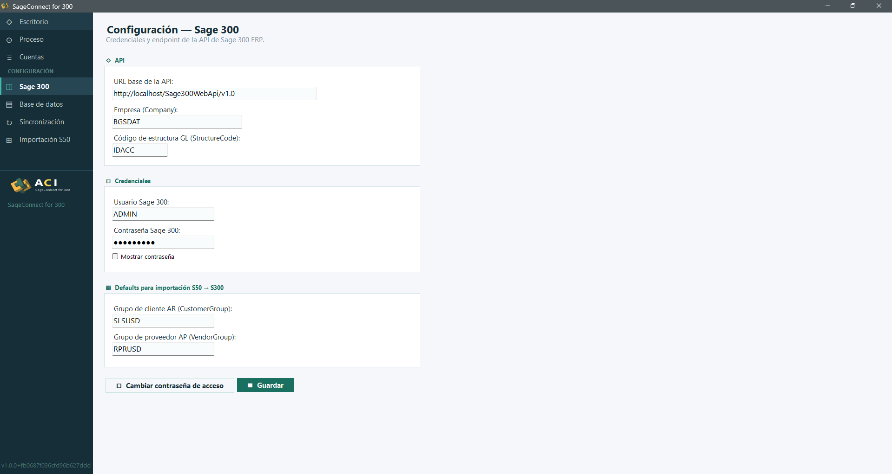
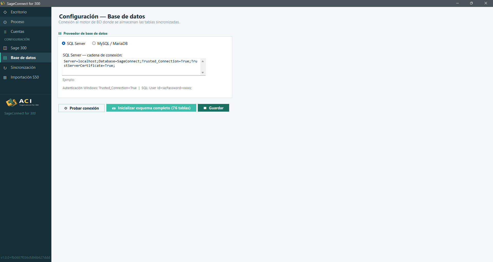
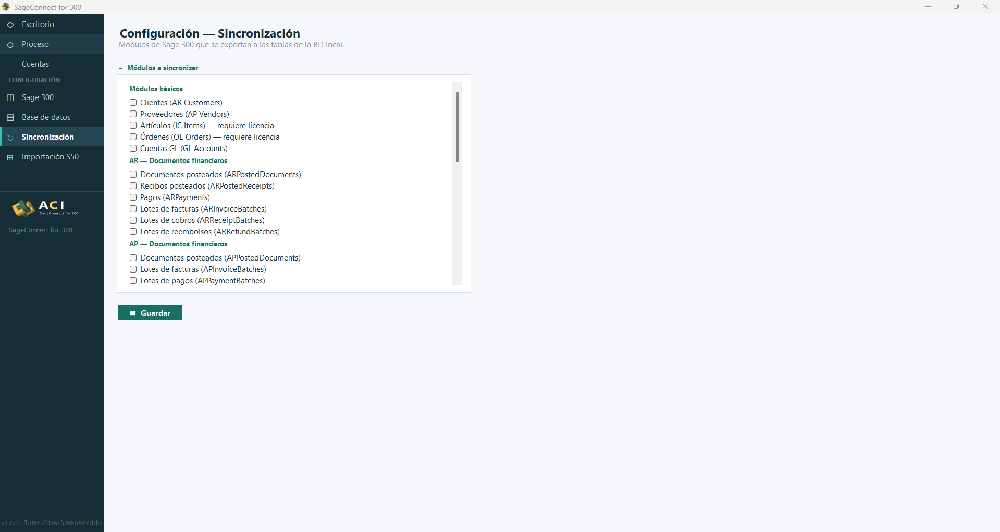
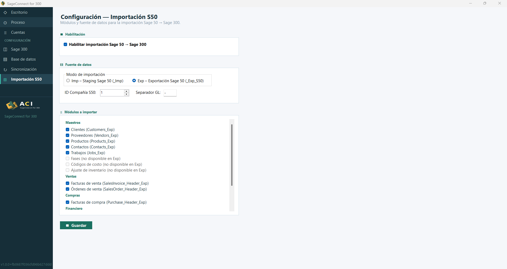

🛠️ Configuración avanzada
El bloque CONFIGURACIÓN del menú lateral agrupa cuatro pantallas que deben completarse para poner en marcha el conector.
1. Configuración — Sage 300
Permite definir las credenciales y el endpoint de la API de Sage 300 ERP:
API
- URL base de la API:
http://localhost/Sage300WebApi/v1.0 - Empresa (Company):
BGSDAT - Código de estructura GL (StructureCode):
IDACC
Credenciales
- Usuario Sage 300:
ADMIN - Contraseña Sage 300: campo oculto (use Mostrar contraseña para revelar)
Defaults para importación S50 → S300
- Grupo de cliente AR (CustomerGroup):
SLSUSD - Grupo de proveedor AP (VendorGroup):
RPRUSD
Dispone además del botón Cambiar contraseña de acceso para modificar la contraseña del Manager. Use Guardar para conservar los cambios.

2. Configuración — Base de datos
Define la conexión al motor de base de datos donde se almacenan las tablas sincronizadas.
Proveedor de base de datos
- 🔘 SQL Server (por defecto)
- ○ MySQL / MariaDB
SQL Server — cadena de conexión
Server=localhost;Database=SageConnect;Trusted_Connection=True;TrustServerCertificate=True;💡 Sugerencia: Para autenticación Windows usarTrusted_Connection=True. Para SQL usarUser Id=sa;Password=xxxxx;.
Acciones disponibles
- Probar conexión — Verifica que la cadena de conexión sea válida.
- Inicializar esquema completo (76 tablas) — Crea todas las tablas necesarias en la base de datos.
- Guardar — Persiste los cambios.

3. Configuración — Sincronización
Permite seleccionar los módulos de Sage 300 que se exportarán a las tablas de la BD local:
Módulos básicos
- ⬜ Clientes (AR Customers)
- ⬜ Proveedores (AP Vendors)
- ⬜ Artículos (IC Items) — requiere licencia
- ⬜ Órdenes (OE Orders) — requiere licencia
- ⬜ Cuentas GL (GL Accounts)
AR — Documentos financieros
- ⬜ Documentos posteados (ARPostedDocuments)
- ⬜ Recibos posteados (ARPostedReceipts)
- ⬜ Pagos (ARPayments)
- ⬜ Lotes de facturas (ARInvoiceBatches)
- ⬜ Lotes de cobros (ARReceiptBatches)
- ⬜ Lotes de reembolsos (ARRefundBatches)
AP — Documentos financieros
- ⬜ Documentos posteados (APPostedDocuments)
- ⬜ Lotes de facturas (APInvoiceBatches)
- ⬜ Lotes de pagos (APPaymentBatches)
Tras seleccionar los módulos deseados se pulsa Guardar.

4. Configuración — Importación S50
Permite configurar los módulos y la fuente de datos para la importación Sage 50 → Sage 300.
Habilitación
- ☑️ Habilitar importación Sage 50 → Sage 300
Fuente de datos
- ○ Imp — Staging Sage 50 (
_Imp) - 🔘 Exp — Exportación Sage 50 (
_Exp_S50) (seleccionado por defecto) - ID Compañía S50:
1 - Separador GL:
-
Módulos a importar
Maestros
- ☑️ Clientes (Customers_Exp)
- ☑️ Proveedores (Vendors_Exp)
- ☑️ Productos (Products_Exp)
- ☑️ Contactos (Contacts_Exp)
- ☑️ Trabajos (Jobs_Exp)
- ⬜ Fases (no disponible en Exp)
- ⬜ Códigos de costo (no disponible en Exp)
- ⬜ Ajuste de inventario (no disponible en Exp)
Ventas
- ☑️ Facturas de venta (SalesInvoice_Header_Exp)
- ☑️ Órdenes de venta (SalesOrder_Header_Exp)
Compras
- ☑️ Facturas de compra (Purchase_Header_Exp)
Financiero
(sección visible al hacer scroll)
Pulse Guardar para aplicar los cambios.

🎉 ¡Configuración completa! Vuelve al inicio y ejecuta la primera sincronización manual desde el Escritorio.